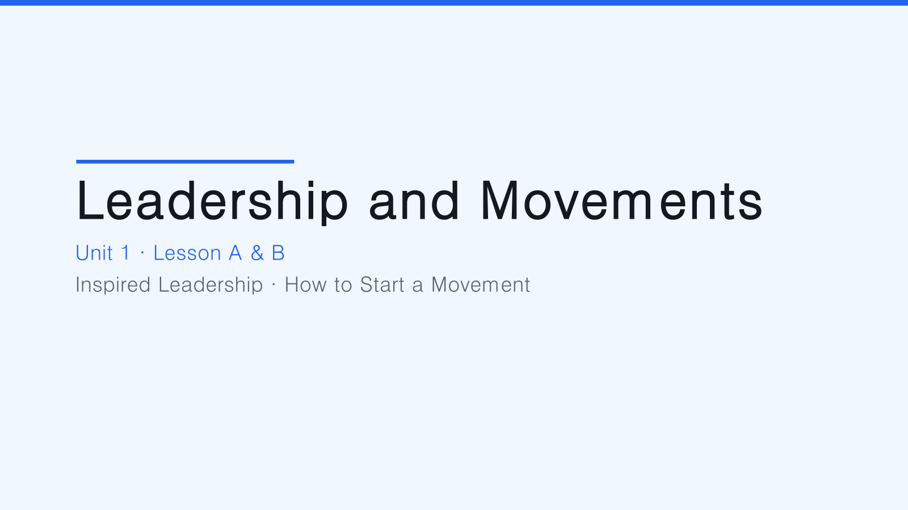

ASSESSMENT
Pass/Fail · 이수/미이수. 일정·평가·AI 허용 범위는 교수자의 최신 공지를 따르세요.
CWNU · GEA8835 · FALL 2026
인공지능과 TED강의로 배우는
글로벌 커뮤니케이션
Global Communication through Artificial Intelligence and TED Talks
TED의 아이디어를 비판적으로 탐구하고, AI를 검증하며, 나의 영어로 세계와 소통하는 수업입니다.

COURSE PATH
생각하고, 검증하고, 표현합니다
01Explore
TED와 글로벌 이슈에서 질문을 찾습니다.
02Examine
관점, 근거와 AI 출력을 비판적으로 검토합니다.
03Communicate
영어로 협업하고 자신의 메시지를 설계합니다.
04Reflect
피드백 선택과 수정 과정을 학습 증거로 남깁니다.
WEEKLY MODULES
학습 모듈 바로가기
질문에서 시작해 산출물로 마무리합니다.
AI USE PRINCIPLE
AI는 판단을 돕고, 대신하지 않습니다
- 먼저 자신의 생각과 초안을 만듭니다.
- AI의 주장, 출처와 언어 선택을 확인합니다.
- 수용·수정·거부한 이유를 기록합니다.
- 최종 메시지는 자신의 책임으로 표현합니다.
READY FOR CLASS